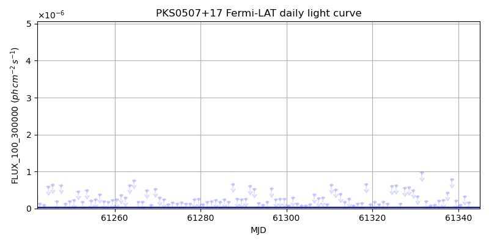
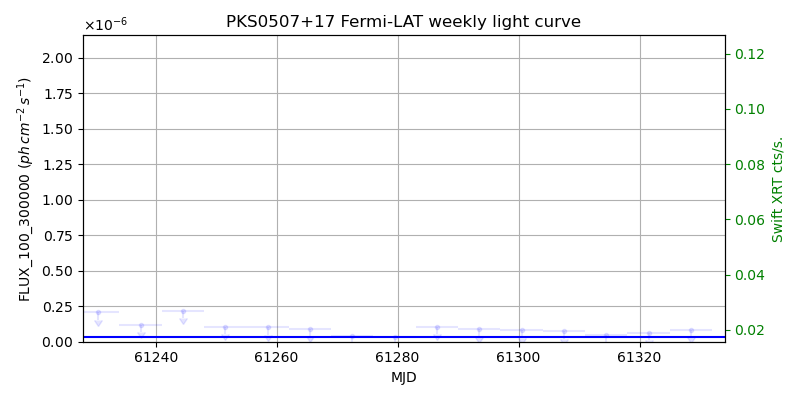
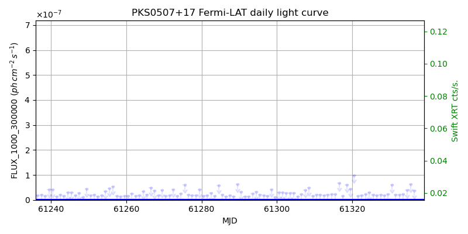
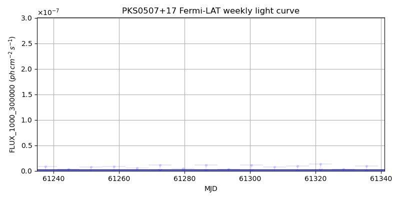

LAT Lightcurve site: https://fermi.gsfc.nasa.gov/ssc/data/access/lat/msl_lc/source/PKS_0507p17
Swift site: https://www.swift.psu.edu/monitoring/source.php?source=PKS0507+17
NED: Query
Time of last update of this page: UT: 2026-10-17 15:15 (MJD: 61330.636)
| Property | Value |
|---|---|
| R.A. | 5:10:02.40 |
| Dec. | 18:00:43.2 |
| z | 0.416 |
| 3FGL SpectrumType | PowerLaw |
| 3FGL PL Index | 2.41 |
| 3FGL Flux_100_300000 | 3.43e-08 1 / (s cm2) |
| 3FGL Flux_1000_300000 | 1.34e-09 1 / (s cm2) |
| 3FGL Flux >200 GeV | 7.62e-13 1 / (s cm2) |
| 3FGL Extrap. Crab >200 GeV | 0.00 |
| 3FGL Flux After EBL Absorption >200GeV | 1.67e-13 1 / (s cm2) |
| 3FGL EBL Crab Fraction >200GeV | 0.00 |

| MJD | dMJD | Flux | dFlux | Frac3FGL | FracCrab>200GeV | EBLFracCrab>200GeV |
|---|---|---|---|---|---|---|
| 61325.50 | 0.50 | 6.17e-07 | 0.00e+00 | 0.00 | 0.00 | 0.00 |
| 61326.50 | 0.50 | 1.28e-07 | 0.00e+00 | 0.00 | 0.00 | 0.00 |
| 61327.50 | 0.50 | 5.49e-07 | 0.00e+00 | 0.00 | 0.00 | 0.00 |
| 61328.50 | 0.50 | 5.78e-07 | 0.00e+00 | 0.00 | 0.00 | 0.00 |
| 61329.50 | 0.50 | 4.98e-07 | 0.00e+00 | 0.00 | 0.00 | 0.00 |

| MJD | dMJD | Flux | dFlux | Frac3FGL | FracCrab>200GeV | EBLFracCrab>200GeV |
|---|---|---|---|---|---|---|
| 61293.50 | 3.50 | 9.07e-08 | 0.00e+00 | 0.00 | 0.00 | 0.00 |
| 61300.50 | 3.50 | 8.32e-08 | 0.00e+00 | 0.00 | 0.00 | 0.00 |
| 61307.50 | 3.50 | 7.24e-08 | 0.00e+00 | 0.00 | 0.00 | 0.00 |
| 61314.50 | 3.50 | 4.41e-08 | 0.00e+00 | 0.00 | 0.00 | 0.00 |
| 61321.50 | 3.50 | 6.42e-08 | 0.00e+00 | 0.00 | 0.00 | 0.00 |

| MJD | dMJD | Flux | dFlux | Frac3FGL | FracCrab>200GeV | EBLFracCrab>200GeV |
|---|---|---|---|---|---|---|
| 61325.50 | 0.50 | 1.97e-08 | 0.00e+00 | 0.00 | 0.00 | 0.00 |
| 61326.50 | 0.50 | 1.90e-08 | 0.00e+00 | 0.00 | 0.00 | 0.00 |
| 61327.50 | 0.50 | 2.00e-08 | 0.00e+00 | 0.00 | 0.00 | 0.00 |
| 61328.50 | 0.50 | 1.82e-08 | 0.00e+00 | 0.00 | 0.00 | 0.00 |
| 61329.50 | 0.50 | 2.37e-08 | 0.00e+00 | 0.00 | 0.00 | 0.00 |

| MJD | dMJD | Flux | dFlux | Frac3FGL | FracCrab>200GeV | EBLFracCrab>200GeV |
|---|---|---|---|---|---|---|
| 61293.50 | 3.50 | 3.72e-09 | 0.00e+00 | 0.00 | 0.00 | 0.00 |
| 61300.50 | 3.50 | 1.15e-08 | 0.00e+00 | 0.00 | 0.00 | 0.00 |
| 61307.50 | 3.50 | 7.70e-09 | 0.00e+00 | 0.00 | 0.00 | 0.00 |
| 61314.50 | 3.50 | 9.09e-09 | 0.00e+00 | 0.00 | 0.00 | 0.00 |
| 61321.50 | 3.50 | 1.35e-08 | 0.00e+00 | 0.00 | 0.00 | 0.00 |
--------------------------------------------------------- Using user-supplied coords: 5:10:02.40 18:00:43.2 2000 --------------------------------------------------------- FLWO UT night of: 2026-10-18 Local Sid. @ Midnight: 01:23 Sunset (-15.0) (local, UT): 18:56 01:56 Sunrise (-15.0) (local, UT): 05:22 12:22 Moonrise (local, UT): Moonset (local, UT): 22:59 05:59 Moon phase: 0.47 --------------------------------------------------------- AzTime LSID UT Obj_el Obj_az Mn_el Mn_az Sep. --------------------------------------------------------- 18:56 20:18 01:56 -23.0 48.8 30.5 195.3 149.2 19:26 20:48 02:26 -18.0 54.3 28.5 202.5 149.1 19:56 21:18 02:56 -12.7 59.2 25.9 209.3 149.0 20:26 21:48 03:26 -7.0 63.7 22.6 215.6 148.8 20:56 22:19 03:56 -0.5 67.8 18.8 221.3 148.7 21:26 22:49 04:26 4.9 71.7 14.5 226.6 148.5 21:56 23:19 04:56 11.0 75.4 9.9 231.4 148.3 22:26 23:49 05:26 17.2 79.0 5.0 235.7 148.1 22:56 00:19 05:56 23.5 82.6 0.2 239.8 148.0 23:26 00:49 06:26 29.9 86.2 -5.5 243.5 147.7 23:56 01:19 06:56 36.3 90.1 -11.3 247.0 147.5 00:26 01:49 07:26 42.7 94.2 -17.0 250.4 147.3 00:56 02:19 07:56 49.0 98.9 -22.8 253.6 147.1 01:26 02:49 08:26 55.3 104.5 -28.7 256.7 146.8 01:56 03:19 08:56 61.4 111.7 -34.7 259.8 146.5 02:26 03:49 09:26 67.1 121.6 -40.7 263.0 146.2 02:56 04:20 09:56 72.1 136.4 -46.8 266.4 146.0 03:26 04:50 10:26 75.5 159.1 -52.8 270.1 145.7 03:56 05:20 10:56 76.2 188.6 -58.9 274.3 145.3 04:26 05:50 11:26 73.8 214.9 -64.9 279.6 145.0 04:56 06:20 11:56 69.4 232.8 -70.8 287.0 144.7 05:22 06:46 12:22 64.6 243.1 -75.7 297.1 144.4 --------------------------------------------------------- Dark hours >55 deg.: 3.95 srcstart (UT): 2026-10-18 08:24 srcend (UT): 2026-10-18 12:22